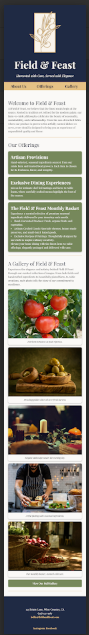
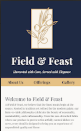
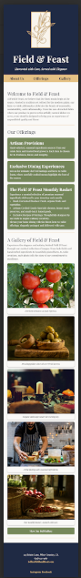
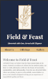

Vanguard
Interactive Design for Modern Storytelling
Background & Context
The Vanguard project was created to explore how visual hierarchy, rhythm, and movement can guide user attention and enhance the storytelling aspect of digital design. The assignment challenged me to merge visual creativity with technical implementation using HTML, CSS, and animation principles. The purpose was to develop a functional yet engaging user experience while maintaining accessibility and clean layout organization.
Problem / Objective
The main objective of this project was to design a modern web interface that demonstrates my ability to implement dynamic motion while maintaining usability. The challenge involved using hierarchy and rhythm not only for aesthetics but to improve user comprehension and navigation. The end goal was to create a site that feels structured, balanced, and alive.
Process & Methodology
I began by researching effective motion-design systems and how rhythm influences attention on screen. I created wireframes and mapped key transitions before building the layout using semantic HTML5 and CSS Grid. CSS transitions and keyframes were integrated to establish movement consistency. Each interactive element was carefully timed and tested for responsiveness. The entire process included iterative testing for accessibility, ensuring color contrast compliance and smooth animation flow across browsers and devices.
Results & Outcome
The completed design achieved an elegant balance between movement and clarity. The page demonstrated that animation could enhance comprehension without distracting the viewer. Layout and typography followed a clean visual rhythm, leading users naturally through the content. The final version successfully validated as accessible, responsive, and visually cohesive.
Reflection
The Vanguard project taught me how to use animation deliberately to serve function. It strengthened my understanding of motion hierarchy and visual storytelling in user experience. Through experimentation, I learned that thoughtful movement can elevate design intent and emotional engagement when combined with clarity and simplicity. This project represents my growth as a designer who bridges technical coding skills with creative communication.


Field & Feast
A Responsive Farm-to-Table Website
Background
Field & Feast was a class assignment focused on building a responsive website using semantic HTML5 and CSS. The goal was to create a clean, elegant layout that reflected a farm-to-table brand identity. The professor provided the content, photos, and design mockups, and my task was to code a site that matched the example and displayed correctly across multiple screen sizes. This project helped me apply web standards while maintaining visual consistency and brand harmony.
Problem Statement
The main goal was to create a functional, responsive website that accurately followed the provided mockups. The design needed to use semantic HTML, organized CSS, and accessibility best practices—including descriptive alt text and responsive images adapted to different devices and browsers.
Process
I began by creating a new GitHub repository called field and feast and opened
the project in Visual Studio Code. Using semantic HTML5 tags like
<header>, <main>,
<section>, and <footer>, I structured the content
to create a logical flow that worked well for both users and assistive technologies.
Next, I designed the layout with CSS Grid and media queries, applying a mobile-first approach so the site looked great on smaller screens before adjusting to tablets and desktops. I paid close attention to spacing, alignment, and text hierarchy to maintain readability. All images were made responsive, and I included descriptive alt text for accessibility.
Once the structure and styling were complete, I validated the HTML and CSS with the W3C Validator, corrected warnings, and published the finished site using GitHub Pages. Even though I no longer have access to the original repository, I kept the mockups and screenshots that document the layout and responsiveness of the final build.
Results
The completed website presented a calm, refined aesthetic with smooth responsiveness across devices. Its balanced grid layout, clear typography, and organic color palette reflected the simplicity of a farm-to-table brand. Through this project, I strengthened my understanding of semantic structure, CSS Grid, accessibility, and publishing through GitHub Pages.
 





Wunderlust Travel
Accessible, Mobile-First Travel Website
Background
Wunderlust Travel was created as a responsive web design project focused on accessibility, structure, and mobile-first principles. The goal was to design and code a travel-themed website that provided a smooth, enjoyable browsing experience for users planning their next trip. The assignment emphasized clear organization, responsive images, and semantic HTML structure that adapts to all screen sizes.
Problem Statement
The main challenge was to design and code a travel website that would validate successfully through the W3C standards, remain fully accessible to users with disabilities, and maintain readability across mobile, tablet, and desktop devices. The project required integrating responsive imagery, proper form structure, and consistent navigation while keeping the design visually appealing and engaging.
Process
I began by setting up the project using semantic HTML5 to
define a logical structure for accessibility tools. Tags such as
<header>, <main>,
<section>, and <footer> were used to
provide meaningful context for each part of the site. I followed a
mobile-first approach, ensuring layouts scaled smoothly as
screen sizes increased.
Using CSS Grid and Flexbox, I designed a
balanced layout for different content sections — including travel
destinations, accommodations, and testimonials. The site featured a
contact form built for accessibility and form validation. I also used
<picture> elements to deliver optimized images for
various screen resolutions, improving both performance and usability.
Throughout development, I validated my code, reviewed accessibility contrast, and tested responsiveness on multiple devices. Once finalized, I published the project through GitHub Pages and documented screenshots of the completed interface.
Results
The final website delivered a modern, inviting design that inspires travel exploration while maintaining accessibility standards. The structure was easy to navigate, images loaded efficiently across devices, and form inputs followed usability guidelines. The project successfully demonstrated technical knowledge of HTML semantics, responsive image handling, and accessible design principles.
Reflection
Wunderlust Travel strengthened my understanding of mobile-first design and inclusive accessibility practices. This project helped me learn how to balance aesthetics with functionality and performance. It reinforced that thoughtful coding and testing lead to user-friendly, professional results suited for real-world applications.